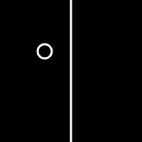

The draw function is responsible for what we see on the canvas, but it is also attached to a timer that is repeatedly calling it. We can use that to our advantage as we can design programs that look different over time.
Open the Changing State Over Time workspace in CodeHS.
The frameCount variable has been the only way so far that we've had 'change over time' programs. This time it's used to get two noise values, which are then mapped to the width and height of the canvas.
let x = noise(frameCount*0.003,15)*width;
let y = noise(frameCount*0.003,85)*height;
With this happening, the circle drawn at (x,y) will drift around in a noisy fashion.
The circle wandering around the canvas is relatively random. Our goal will be to keep track of the largest and smallest values of x and y visually on the screen using lines. We'll start with tracking the largest x and go from there.
- Add a new variable to the sketch named maxX, which is intended to hold the largest value of x that we come across.
- In the beginning we don't have any information, so during the setup function assign 100 to maxX. This is a temporary value to get us started.
- In the draw function we want to show where the maxX is on the screen using a line using a vertical line with x values of maxX. This should look this:
line(maxX, 0, maxX, height);
At this point we have a variable that is set to 100 and a line that draws at that location. Run the sketch to make sure that the vertical line appears in the correct place. At this point it shouldn't move.

Pushing the maxX Higher
Right now maxX is a guaranteed 100, which is not what we want it to be. Instead we want to maxX to actually be the largest possible x that the circle comes across. To do this we need to replace the maxX variable every time that we find a larger value of x. In the draw function add the following if statement somewhere after the x value is generated:
if( x > maxX ){
maxX = x;
}
Using an if statement in this way means that maxX can only get larger. It will never replace it with smaller x value.
Now when you run your sketch and watch it for a little bit you'll see that the line will be pushed to the right when the ball drifts past it.
Choosing a Starting Value for MaxX
I casually told you to initialize the maxX value to be 100 because it was simple to see on the screen, but it's really not the best choice. Sometimes it takes a while for the circle to hit the line and start moving it. A better choice would be to start the maxX at 0 instead of 100. If we do this, we'll see that the very first value of x instantly becomes the max, no matter how big it is.
Now that we're tracking the maxX, it is your job to do the other three lines:
Maximum Y Line: Similar to the maximum x, you should create a maxY variable that starts at 0 and is replaced every time a larger y value is found. To display this value, draw a horizontal that uses maxY as the y value.
Minimum X and Y: These lines are similar to the maximum lines, but with the opposite effect. This time you'll be making a minX and minY that are replaced when you find lower values. Be careful not to start them at 0. This value is too small to be replaced. Instead start it at a large value, like width or height. Again this choice is to make sure that this value is replaced entirely.
While the frameCount variable has been helpful for our programs so far. It is still pretty limiting.
Open the Marquee workspace in CodeHS. There you will find an attempt at making the above sketch. It does so by using the frameCount variable as the x value of the text() call:
text("Hello World", frameCount,60);
The problem is that frameCount only increases. In the sketch above the x value increases for most of the time, but when it gets too large it resets to zero before increasing again.
Your job will be to fix the Marquee workspace
1) Add a global variable to the sketch named x
let x;
2) In the setup() function, initialize x to be zero.
3) Modify the call to text() to use x instead of frameCount.
At this point we have the variable x, but it doesn't grow in the same way that frameCount does. Run your program and you'll see the message stuck at the original zero for x. frameCount increases once for ever call to draw(). You can do that too! At the end of the draw() function, after the call to text(), add one to x.
x += 1;
This means that x should increase by one each time that the draw() function is called.
When the message drifts off the edge of the canvas, we want it to re-enter on the opposite side of the canvas. To accomplish this, add an if statement to the end of draw that will check to see if the x value is larger than the width of the canvas. If so, simply set the x value to be 0 again. Doing this will cause the message to suddenly be located at zero, and to continue to drift to the right.
Run your program to make sure that it teleports once it drifts offscreen. Take note that setting the x to zero causes it to suddenly appear. Instead, we want the message to be set further to the left, like -100. This will place it offscreen and allow it to drift in.
Click to restart countdown
Your job is to create a timer that will start at a large number, like 20, and constantly be counting down to zero. Once it hits zero it should never change. At that point, your sketch should 'unlock' in some way. In the demo, the background goes crazy, but yours can do something else. Also, when you click the sketch, the counter should start back at 20.
Strategy: Don't worry about the 'unlock' portion at the beginning. This sketch only needs a single global variable to represent the value that is being displayed. Set up your sketch so that the variable starts at 20 and decreases by one each draw cycle. Test it out to make sure that you have a decreasing value being displayed. If so, add an if statement to the draw function to make sure that the value doesn't decrease past zero.
Once you have a value that decreases to zero and then stops, add the mousePressed function that will assign the global variable to be 20 again. This should cause the countdown to start over at 20.
Finally. Add an if statement to the draw function that will draw the sketch differently if the variable is 0 or not.
Hover over the circle above to watch it grow.
Open the CircleGrow workspace. Your Task there is to create a sketch like the one above. The circle grows when the mouse is within the circle, and it shrinks when not.
To accomplish this you'll have to design a circle whose radius is based on a global variable. Each time the draw() function is called you should first draw the circle, and then make a small change to the radius to cause it to grow or shrink.
Remember that the dist() function is helpful for telling if the mouse is within the circle.
There is a maximum and a minimum for the radius as well. It should not just grow out of control. Your radius should only grow if it isn't already too large, and it should only shrink if it isn't too small.